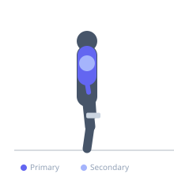
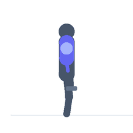

Exercise guide / Weighted Parallel Bar Dips
Weighted Parallel Bar Dips
Weighted parallel bar dips add external load via a dip belt, vest, or dumbbell held between the legs to the standard dip movement, increasing the demand on the lower pectorals, triceps, and anterior deltoids. This is one of the best absolute strength builders for the chest-triceps complex and allows progressive overload far beyond bodyweight limitations.
Primary muscles
pectoralis major sternal
triceps lateral head
Secondary muscles
pectoralis major clavicular
triceps long head
triceps medial head
deltoid anterior
Stabilizers
subscapularis
pectoralis minor
Equipment
Dip Bars / Dip Station
Dip Belt
Optional
Dumbbell (Fixed)


Starting position
- Attach the desired weight to a dip belt or hold a dumbbell between crossed ankles. Mount the parallel bars with arms extended, body upright.
Setup
- Ensure the dip bars are stable and wide enough for a comfortable grip. Attach weight securely to the belt before mounting. Begin with modest added weight and progress gradually.
Steps
- Step 1: Mount the dip bars in the support position with arms locked, slight forward lean.
- Step 2: Lower the body by bending the elbows, maintaining a consistent forward torso lean.
- Step 3: Descend until shoulders are at or below elbow level for full depth.
- Step 4: Drive powerfully upward through the hands, pressing back to the lockout position.
- Step 5: Maintain a controlled tempo — do not use the weight as momentum.
Coaching cues
- Lean forward for chest — stay upright for triceps
- Full depth every rep
- The added weight is a privilege earned with clean bodyweight dips
Breathing
- Inhale as you lower. Exhale as you press up through the lockout.
Range of motion
- Lower until shoulder is at or below elbow level. Full lockout at the top without hyperextending the elbow joint.
Tempo
- 3-1-1-0
Common mistakes
- Adding too much weight before achieving clean bodyweight dips
- Using too upright a torso, shifting all load to the triceps
- Locking the elbows aggressively at the top with excessive weight
Safety
- Master 15–20 clean bodyweight dips before adding external load
- Use a dip belt designed for this purpose — improvised attachment can be dangerous
- Avoid if you have anterior shoulder impingement or rotator cuff issues
Training
- strength: 3–6 reps
- hypertrophy: 6–10 reps
- strength: 3–5 sets
- hypertrophy: 3–4 sets
- Rest: {'strength': 180, 'hypertrophy': 120}